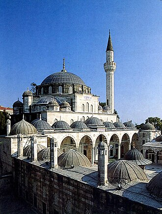

परिचय
La mosquée Sokollu Mehmet Pacha est une mosquée impériale ottomane située dans le quartier fatih à Istanbul, en Turquie, au sud-est de l'Hippodrome de Constantinople. Elle est l'œuvre de l'architecte Sinan qui l'a construite pour le compte du grand vizir Sokollu Mehmet Pacha.
Sokollu Mehmed Pasha Mosque is a 16th-century Ottoman mosque in the Kadırga neighborhood in Fatih district, Istanbul, Turkey. It was commissioned jointly by the grand vizier Sokollu Mehmed Pasha and his wife Ismihan Sultan. It was designed by the imperial architect Mimar Sinan and completed in 1571/2. The mosque is noted for the fine quality of the Iznik tiles that decorate the interior walls.
Sokollu Mehmet Paşa Külliyesi, Mimar Sinan'ın İstanbul Kadırga'da Şehit Mehmet Paşa yokuşunda bulunan ve cami ile külliyeden oluşan bir eseri. Sinan'ın en güzel eserlerinden biri sayılır. Üç padişaha sadrazamlık yapan Sokollu Mehmet Paşa adına 1571'de eşi Esmehan Sultan tarafından yaptırılmıştır.
Masjid Sokollu Mehmed Pasha I, secara resmi bernama Masjid Sokollu Mehmed Pasha Kadırga adalah sebuah masjid bersejarah peninggalan Kesultanan Utsmaniyah yang berada di kawasan Kadırga, distrik Fatih, Provinsi Istanbul, Turki. Masjid ini awalnya dibangun pada tahun 1568, atas perintah Sultan Sokollu Mehmed Pasha dan istrinya İsmihan Sultan, yang kemudian diarsiteki oleh Mimar Sinan, seorang arsitek kekaisaran ternama. Masjid ini merupakan salah satu dari tiga masjid dengan nama yang sama yang dibangun oleh Mimar Sinan di Istanbul, dua diantaranya Masjid Sokollu Mehmed Pasha II dan Masjid Sokollu Mehmed Pasha III.
صوقلو محمد پاشا مسجد استنبول ، ترکی کے ضلع فاتح کے کدورگا محلے میں واقع 16 ویں صدی کی عثمانی مسجد ہے۔ اس کی تعمیر کا آغاز وزیر اعظم صوقلو محمد پاشا اور ان کی اہلیہ سمیعان سلطان نے مشترکہ طور پر کیا تھا۔ اسے شاہی معمار میمار سنن نے ڈیزائن کیا تھا اور اسے 1571/2 میں مکمل کیا گیا تھا۔ اس مسجد کو داخلی دیواروں کو سجانے والے ازنک ٹائلوں کے عمدہ معیار کے لیے جانا جاتا ہے۔
Die Sokollu-Mehmed-Pascha-Moschee ist eine osmanische Moschee im Istanbuler Stadtbezirk Fatih. Sie ist Teil einer religiösen Stiftung des osmanischen Großwesirs Sokollu Mehmed Pascha und seiner Frau İsmihan Sultan. Der Architekt Sinan plante und erbaute sie in den 1560er und 1570er Jahren. Die Moschee ist Bestandteil eines sozio-religiösen Komplexes (Külliye), bestehend aus der Moschee selbst, einer Medrese, einem Derwischkonvent (Tekke), öffentlichen Latrinen und einem Wasserreservoir mit Straßenbrunnen. Das Bauwerk ist bekannt für die herausragende Qualität seiner Fayence-Fliesen aus İznik-Keramik.
La mezquita de Sokollu Mehmed Paşa es una mezquita otomano situada en Kadirga, distrito de Eminönü, Estambul, Turquía.
La moschea di Sokollu Mehmet Pascià è una moschea ottomana del 16º secolo nel quartiere di Kadırga nel distretto di Fatih situata a Istanbul, in Turchia. La moschea è nota per la raffinata qualità delle piastrelle di Iznik che ne decorano le pareti interne.
A Mesquita de Sokollu Mehmet Paşa é uma mesquita otomana situada na área de Kadırga, bairro de Eminönü, distrito de Fatih, Istambul, Turquia, a curta distância da Praça Sultanahmet. Obra do grande arquiteto imperial otomano Mimar Sinan, é considerada por muitos como uma das mais belas mesquitas de Istambul, faz parte das Zonas Históricas de Istambul, classificadas em desde 1985 como Património Mundial da UNESCO.
De Sokollu Pasamoskee is een moskee-complex in de Europese wijk Kadirga in het district Eminönü in Istanboel, Turkije. De moskee werd gebouwd in 1571-1572 door de beroemde Ottomaanse architect Mimar Sinan voor grootvizier Sokollu Mehmet Paşa, de man van een van de kleindochters van Sultan Süleyman I, Princess Esmahan. De moskee was oorspronkelijk vernoemd naar haar, maar is tegenwoordig beter bekend onder de naam van haar meer beroemde man. De moskee staat bekend om zijn met blauwe tegels (İznik-keramiek) ingelegde interieur en om het feit dat hij gebouwd is op een steile helling. De voornaamste bouwmaterialen die voor de moskee zijn gebruikt zijn graniet en marmer.
소콜루 메흐메트 파샤 모스크(튀르키예어: Sokollu Mehmet Paşa Camii 소콜루 메흐메트 파샤 자미[*])는 터키 이스탄불 파티흐 카드르가 지역에 위치한 오스만 모스크이다.
Мече́ть Соколлу́ Мехме́д-паши́ — мечеть в микрорайоне Кадырга исторического района Фатих в европейской части Стамбула. Названа в честь великого визиря Соколлу Мехмед-паши.
नक़्शे पर
दस्तावेज़ और लिंक
- Wikipédia — Français
- Wikipédia — العربية
- Wikipédia — English
- Wikipédia — Türkçe
- Wikipédia — Bahasa Indonesia
- Wikipédia — اردو
- Wikipédia — Deutsch
- Wikipédia — Español
- Wikipédia — Italiano
- Wikipédia — Português
- Wikipédia — Nederlands
- Wikipédia — 中文
- Wikipédia — 한국어
- Wikipédia — Русский
- Wikidata — Q1572472
डेटा: विकिडेटा (CC0), हर 3 महीने में अपडेट। वर्ष इमारत के निर्माण की सबसे पुरानी ज्ञात तिथि है: जो इमारत बाद में मस्जिद बनी (जैसे हागिया सोफ़िया), उसके लिए यह मूल इमारत का वर्ष है। तस्वीरें: विकिमीडिया कॉमन्स, लेखक और लाइसेंस हर तस्वीर के पेज पर।